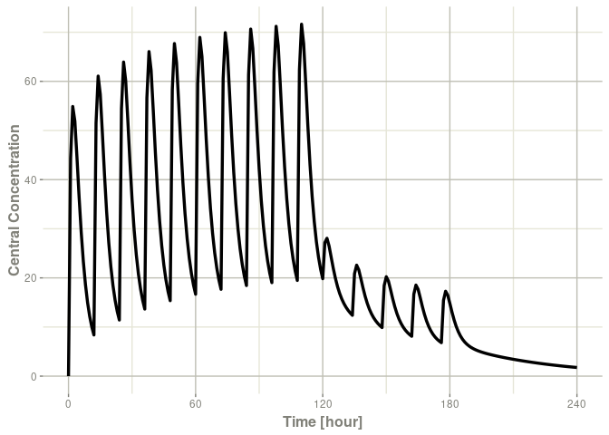
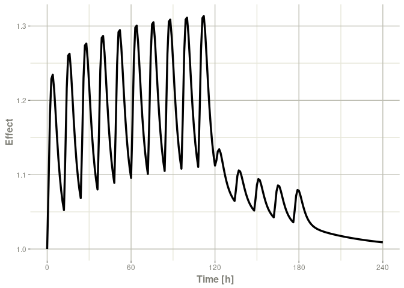

Overview
rxode2 is an R package for solving and simulating from ode-based models. These models are convert the rxode2 mini-language to C and create a compiled dll for fast solving. ODE solving using rxode2 has a few key parts:
-
rxode2()which creates the C code for fast ODE solving based on a simple syntax related to Leibnitz notation. - The event data, which can be:
- a
NONMEMordeSolvecompatible data frame, or - created with
et()oreventTable()for easy simulation of events - The data frame can be augmented by adding time-varying or adding individual covariates (
iCov=as needed)
- a
-
rxSolve()which solves the system of equations using initial conditions and parameters to make predictions- With multiple subject data, this may be parallelized.
- With single subject the output data frame is adaptive
- Covariances and other metrics of uncertanty can be used to simulate while solving
Installation
You can install the released version of rxode2 from CRAN with:
install.packages("rxode2")The fastest way to install the development version of rxode2 is to use the r-universe service. This service compiles binares of the development version for MacOS and for Windows so you don’t have to wait for package compilation:
install.packages(c("dparser", "rxode2ll", "rxode2parse",
"rxode2random", "rxode2et", "rxode2"),
repos=c(nlmixr2="https://nlmixr2.r-universe.dev",
CRAN="https://cloud.r-project.org"))If this doesn’t work you install the development version of rxode2 with
devtools::install_github("nlmixr2/rxode2parse")
devtools::install_github("nlmixr2/rxode2random")
devtools::install_github("nlmixr2/rxode2et")
devtools::install_github("nlmixr2/rxode2ll")
devtools::install_github("nlmixr2/rxode2")To build models with rxode2, you need a working c compiler. To use parallel threaded solving in rxode2, this c compiler needs to support open-mp.
You can check to see if R has working c compiler you can check with:
## install.packages("pkgbuild")
pkgbuild::has_build_tools(debug = TRUE)If you do not have the toolchain, you can set it up as described by the platform information below:
Windows
In windows you may simply use installr to install rtools:
install.packages("installr")
library(installr)
install.rtools()Alternatively you can download and install rtools directly.
Mac OSX
To get the most speed you need OpenMP enabled and compile rxode2 with that compiler. There are various options and the most up to date discussion about this is likely the data.table installation faq for MacOS. The last thing to keep in mind is that rxode2 uses the code very similar to the original lsoda which requires the gfortran compiler to be setup as well as the OpenMP compilers.
If you are going to be using rxode2 and nlmixr together and have an older mac computer, I would suggest trying the following:
If this crashes your R session then the binary does not work with your Mac machine. To be able to run nlmixr, you will need to compile this package manually. I will proceed assuming you have homebrew installed on your system.
On your system terminal you will need to install the dependencies to compile symengine:
brew install cmake gmp mpfr libmpcAfter installing the dependencies, you need to reinstall symengine:
install.packages("symengine", type="source")
library(symengine)Development Version
Since the development version of rxode2 uses StanHeaders, you will need to make sure your compiler is setup to support C++14, as described in the rstan setup page. For R 4.0, I do not believe this requires modifying the windows toolchain any longer (so it is much easier to setup).
Once the C++ toolchain is setup appropriately, you can install the development version from GitHub with:
# install.packages("devtools")
devtools::install_github("nlmixr2/rxode2parse")
devtools::install_github("nlmixr2/rxode2random")
devtools::install_github("nlmixr2/rxode2et")
devtools::install_github("nlmixr2/rxode2ll")
devtools::install_github("nlmixr2/rxode2")Illustrated Example
The model equations can be specified through a text string, a model file or an R expression. Both differential and algebraic equations are permitted. Differential equations are specified by d/dt(var_name) =. Each equation can be separated by a semicolon.
To load rxode2 package and compile the model:
library(rxode2)
#> rxode2 2.0.11.9000 using 4 threads (see ?getRxThreads)
mod1 <- rxode2({
C2 <- centr/V2;
C3 <- peri/V3;
d/dt(depot) <- -KA*depot;
d/dt(centr) <- KA*depot - CL*C2 - Q*C2 + Q*C3;
d/dt(peri) <- Q*C2 - Q*C3;
d/dt(eff) <- Kin - Kout*(1-C2/(EC50+C2))*eff;
})Specify ODE parameters and initial conditions
Model parameters can be defined as named vectors. Names of parameters in the vector must be a superset of parameters in the ODE model, and the order of parameters within the vector is not important.
theta <-
c(KA=2.94E-01, CL=1.86E+01, V2=4.02E+01, # central
Q=1.05E+01, V3=2.97E+02, # peripheral
Kin=1, Kout=1, EC50=200) # effectsInitial conditions (ICs) can be defined through a vector as well. If the elements are not specified, the initial condition for the compartment is assumed to be zero.
inits <- c(eff=1)If you want to specify the initial conditions in the model you can add:
eff(0) = 1Specify Dosing and sampling in rxode2
rxode2 provides a simple and very flexible way to specify dosing and sampling through functions that generate an event table. First, an empty event table is generated through the “eventTable()” function:
ev <- eventTable(amount.units='mg', time.units='hours')Next, use the add.dosing() and add.sampling() functions of the EventTable object to specify the dosing (amounts, frequency and/or times, etc.) and observation times at which to sample the state of the system. These functions can be called multiple times to specify more complex dosing or sampling regiments. Here, these functions are used to specify 10mg BID dosing for 5 days, followed by 20mg QD dosing for 5 days:
ev$add.dosing(dose=10000, nbr.doses=10, dosing.interval=12)
ev$add.dosing(dose=20000, nbr.doses=5, start.time=120,
dosing.interval=24)
ev$add.sampling(0:240)If you wish you can also do this with the mattigr pipe operator %>%
ev <- eventTable(amount.units="mg", time.units="hours") %>%
add.dosing(dose=10000, nbr.doses=10, dosing.interval=12) %>%
add.dosing(dose=20000, nbr.doses=5, start.time=120,
dosing.interval=24) %>%
add.sampling(0:240)The functions get.dosing() and get.sampling() can be used to retrieve information from the event table.
head(ev$get.dosing())
#> id low time high cmt amt rate ii addl evid ss dur
#> 1 1 NA 0 NA (default) 10000 0 12 9 1 0 0
#> 2 1 NA 120 NA (default) 20000 0 24 4 1 0 0
head(ev$get.sampling())
#> id low time high cmt amt rate ii addl evid ss dur
#> 1 1 NA 0 NA (obs) NA NA NA NA 0 NA NA
#> 2 1 NA 1 NA (obs) NA NA NA NA 0 NA NA
#> 3 1 NA 2 NA (obs) NA NA NA NA 0 NA NA
#> 4 1 NA 3 NA (obs) NA NA NA NA 0 NA NA
#> 5 1 NA 4 NA (obs) NA NA NA NA 0 NA NA
#> 6 1 NA 5 NA (obs) NA NA NA NA 0 NA NAYou may notice that these are similar to NONMEM event tables; If you are more familiar with NONMEM data and events you could use them directly with the event table function et
ev <- et(amountUnits="mg", timeUnits="hours") %>%
et(amt=10000, addl=9,ii=12,cmt="depot") %>%
et(time=120, amt=2000, addl=4, ii=14, cmt="depot") %>%
et(0:240) # Add sampling You can see from the above code, you can dose to the compartment named in the rxode2 model. This slight deviation from NONMEM can reduce the need for compartment renumbering.
These events can also be combined and expanded (to multi-subject events and complex regimens) with rbind, c, seq, and rep. For more information about creating complex dosing regimens using rxode2 see the rxode2 events vignette.
Solving ODEs
The ODE can now be solved by calling the model object’s run or solve function. Simulation results for all variables in the model are stored in the output matrix x.
| time | C2 | C3 | depot | centr | peri | eff |
|---|---|---|---|---|---|---|
| 0 | 0.00000 | 0.0000000 | 10000.000 | 0.000 | 0.0000 | 1.000000 |
| 1 | 44.37555 | 0.9198298 | 7452.765 | 1783.897 | 273.1895 | 1.084664 |
| 2 | 54.88296 | 2.6729825 | 5554.370 | 2206.295 | 793.8758 | 1.180825 |
| 3 | 51.90343 | 4.4564927 | 4139.542 | 2086.518 | 1323.5783 | 1.228914 |
| 4 | 44.49738 | 5.9807076 | 3085.103 | 1788.795 | 1776.2702 | 1.234610 |
| 5 | 36.48434 | 7.1774981 | 2299.255 | 1466.670 | 2131.7169 | 1.214742 |
You can also solve this and create a rxode2 data frame:
x <- mod1 %>% rxSolve(theta, ev, inits);
x
#> ── Solved rxode2 object ──
#> ── Parameters (x$params): ──
#> V2 V3 KA CL Q Kin Kout EC50
#> 40.200 297.000 0.294 18.600 10.500 1.000 1.000 200.000
#> ── Initial Conditions (x$inits): ──
#> depot centr peri eff
#> 0 0 0 1
#> ── First part of data (object): ──
#> # A tibble: 241 × 7
#> time C2 C3 depot centr peri eff
#> [h] <dbl> <dbl> <dbl> <dbl> <dbl> <dbl>
#> 1 0 0 0 10000 0 0 1
#> 2 1 44.4 0.920 7453. 1784. 273. 1.08
#> 3 2 54.9 2.67 5554. 2206. 794. 1.18
#> 4 3 51.9 4.46 4140. 2087. 1324. 1.23
#> 5 4 44.5 5.98 3085. 1789. 1776. 1.23
#> 6 5 36.5 7.18 2299. 1467. 2132. 1.21
#> # … with 235 more rowsThis returns a modified data frame. You can see the compartment values in the plot below:

Or,

Note that the labels are automatically labeled with the units from the initial event table. rxode2 extracts units to label the plot (if they are present).
Related R Packages
ODE solving
This is a brief comparison of pharmacometric ODE solving R packages to rxode2.
There are several R packages for differential equations. The most popular is deSolve.
However for pharmacometrics-specific ODE solving, there are only 2 packages other than rxode2 released on CRAN. Each uses compiled code to have faster ODE solving.
-
mrgsolve, which uses C++ lsoda solver to solve ODE systems. The user is required to write hybrid R/C++ code to create a mrgsolve model which is translated to C++ for solving.
In contrast,
rxode2has a R-like mini-language that is parsed into C code that solves the ODE system.Unlike
rxode2,mrgsolvedoes not currently support symbolic manipulation of ODE systems, like automatic Jacobian calculation or forward sensitivity calculation (rxode2currently supports this and this is the basis of nlmixr2’s FOCEi algorithm) -
dMod, which uses a unique syntax to create “reactions”. These reactions create the underlying ODEs and then created c code for a compiled deSolve model.
In contrast
rxode2defines ODE systems at a lower level.rxode2’s parsing of the mini-language comes from C, whereasdMod’s parsing comes from R.Like
rxode2,dModsupports symbolic manipulation of ODE systems and calculates forward sensitivities and adjoint sensitivities of systems.Unlike
rxode2,dModis not thread-safe sincedeSolveis not yet thread-safe. -
PKPDsim which defines models in an R-like syntax and converts the system to compiled code.
Like
mrgsolve,PKPDsimdoes not currently support symbolic manipulation of ODE systems.PKPDsimis not thread-safe.
The open pharmacometrics open source community is fairly friendly, and the rxode2 maintainers has had positive interactions with all of the ODE-solving pharmacometric projects listed.
PK Solved systems
rxode2 supports 1-3 compartment models with gradients (using stan math’s auto-differentiation). This currently uses the same equations as PKADVAN to allow time-varying covariates.
rxode2 can mix ODEs and solved systems.
The following packages for solved PK systems are on CRAN
mrgsolve currently has 1-2 compartment (poly-exponential models) models built-in. The solved systems and ODEs cannot currently be mixed.
pmxTools currently have 1-3 compartment (super-positioning) models built-in. This is a R-only implementation.
PKPDsim uses 1-3 “ADVAN” solutions using non-superpositioning.
PKPDmodels has a one-compartment model with gradients.
Non-CRAN libraries:
- PKADVAN Provides 1-3 compartment models using non-superpositioning. This allows time-varying covariates.